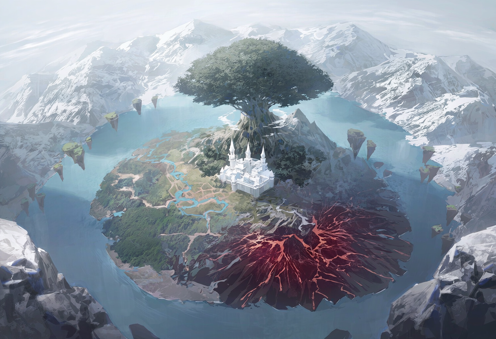
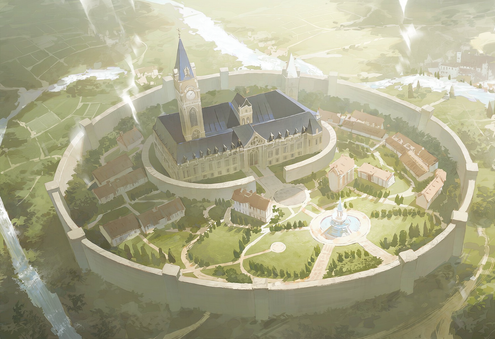

대륙 아스테리아
설산과 물길에 둘러싸인 원형의 대륙, 아스테리아.
북쪽 중앙에는 하늘을 가릴 만큼 거대한 세계수가 솟아 있고,
그 남쪽 절반은 붉게 갈라진 마족의 땅 마계 아비스에 삼켜졌다.
각국은 다가올 침공에 맞서기 위해, 가장 뛰어난 인재를 한곳으로 보낸다.
세계수와 아스테리아
대륙 북쪽 중앙의 세계수는 엘프 왕국 실바넬이 지키는 대륙의 심장. 그 그늘 아래 여섯 세력이 저마다의 땅을 다스린다.
마계 아비스의 위협
대륙의 남쪽 절반을 차지한 마족령. 마기가 짙어 인간은 오래 버티지 못하며, 마왕군은 끊임없이 북쪽 국경을 노린다.
이터널 아카데미
대륙 중앙, 세계수 앞에 선 대륙 최고의 교육기관. 둥근 성벽 안에서 검술과·마법과·신성학과가 미래의 영웅을 길러낸다.
실력주의
종족도 신분도 묻지 않는다. 마법은 서클로, 검은 경지로 증명할 뿐. 입학 첫날의 능력 테스트가 모든 것의 시작이다.
아스테리아의 역사
대륙 지도
지도의 핀을 눌러 지역 정보를 확인하세요.

지도에서 선택해 주세요.
이터널 아카데미
캠퍼스 지도

시설 정보가 나타납니다.
힘의 체계
마법은 서클로, 검은 경지로. 이름을 누르면 인물 정보가 열립니다.
마법 · 서클
1서클부터 9서클까지. 9서클은 대륙 최강의 마법사, 아르카나의 오르텐이 선 경지.
검 · 경지
소드유저 → 익스퍼트(하·중·상·최상) → 마스터(하·중·상) → 그랜드 마스터.
경지 격차
경지가 2단계 이상 차이 나면 아래쪽은 어떤 수를 써도 이길 수 없다. 버티거나 도망치는 것이 한계. 1단계 차이는 전략과 상성으로 뒤집을 수 있다.
환산: 소드유저 = 1서클 · 익스퍼트 하·중·상·최상 = 2·3·4·5서클 · 마스터 하·중·상 = 6·7·8서클 · 그랜드 마스터 = 9서클
성장과 능력치
당신의 무력·마력·민첩은 10에서 시작해 수련과 실전으로 최대 100까지 오른다. 경지 상승은 실전·깨달음·평가 같은 계기가 있어야 하며, 동기와 선배들도 이야기가 진행될수록 경지가 성장한다.
속성
인물 도감
카드를 누르면 감정별 일러스트와 상세 설정을 볼 수 있습니다. 학생은 1·2·3학년으로 나뉘고, 당신은 1학년 신입생입니다.
학사 일정 · 대륙 탐방 실습
1년의 흐름
아카데미를 흔드는 사건
일상 속 사건
대륙 탐방 실습
1학년의 가장 중요한 수행평가. 짝수 달마다 지하 전이 마법진으로 떠나, 3월에 짠 학과 혼합 4인 조가 2주간 현지 임무를 수행한다. 성과는 성적과 진급 심사에 반영된다.
마기와 마수 습격
대결계의 틈으로 스며드는 마계의 기운, 마기. 입학 3일째 밤 첫 습격이 일어나고, 그 뒤로 약 한 달에 한 번 마기가 가득 차면 그날 밤 마수가 아카데미를 덮친다.
🌑 마기 게이지
- 첫 습격은 입학 3일째(3월 4일) 밤. 입학 직후 마기가 빠르게 차오른다.
- 그 뒤로는 하루 약 3씩 쌓여 약 한 달에 한 번 가득 차고, 큰 마법이나 마계와 얽힌 사건이 생기면 더 빨리 오른다.
- 100이 되는 날 밤 경보가 울리고 마수가 습격한다. 교수와 상급생이 방어선을 치지만 1학년도 휘말린다.
- 습격을 막아내면 마기는 0으로 돌아가고, 다음 습격은 더 강해진다.